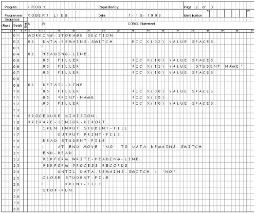
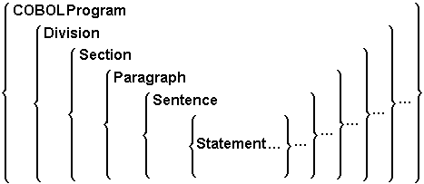
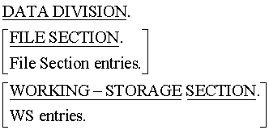

To provide a brief introduction to the programming language COBOL. To provide a context in which its uses might be understood. To introduce the Metalanguage used to describe syntactic elements of the language. To provide an introduction to the major structures present in a COBOL program.
- Introduction Unit aims, objectives, prerequisites.
- What is COBOL? A brief introduction to the COBOL programming language. A historical overview. COBOL's dominance in the business computing domain. Characteristics of COBOL applications. Some reasons for COBOL's success.
- Introduction to Programming This section provides a gentle introduction to programing in general and to programming in COBOL in particular by means of writing some simple COBOL programs.
- COBOL basics This section presents the fundamentals of constructing COBOL programs. It explains the notation used in COBOL syntax diagrams, enumerates the COBOL coding rules, and examines the hierarchical structure of COBOL programs.
- The Four Divisions Provides an introduction to the structure and purpose of the four COBOL divisions.
Introduction
By the end of this unit you should -
- Know what the acronym COBOL stands for.
- Be aware of the significance of COBOL in the marketplace.
- Understand some of the reasons for COBOL's success.
- Be able to understand COBOL Metalanguage syntax diagrams.
- Be aware of the COBOL coding rules
- Understand the structure of COBOL programs
-
Understand the purpose of the
IDENTIFICATION,ENVIRONMENT,DATAandPROCEDUREdivisions.
None. This is the first unit in the course.
What is COBOL?
COBOL is a high-level programming language first developed by the CODASYL Committee (Conference on Data Systems Languages) in 1960. Since then, responsibility for developing new COBOL standards has been assumed by the American National Standards Institute (ANSI).
Three ANSI standards for COBOL have been produced: in 1968, 1974 and 1985. A new COBOL standard introducing object-oriented programming to COBOL, is due within the next few years.
The word COBOL is an acronym that stands for COmmon Business Oriented Language. As the expanded acronym indicates, COBOL is designed for developing business, typically file-oriented, applications. It is not designed for writing systems programs. For instance you would not develop an operating system or a compiler using COBOL.
For over four decades COBOL has been the dominant programming language in the business computing domain. In that time it has seen off the challenges of a number of other languages such as PL1, Algol68, Pascal, Modula, Ada, C, C++. All these languages have found a niche but none has yet displaced COBOL. Two recent challengers though, Java and Visual Basic, are proving to be serious contenders.
COBOL's dominance in underlined by the reports from the Gartner group.
In 1997 they estimated that there were about 300 billion lines of computer code in use in the world. Of that they estimated that about 80% (240 billion lines) were in COBOL and 20% (60 billion lines) were written in all the other computer languages combined [Brown].
In 1999 they reported that over 50% of all new mission-critical applications were still being done in COBOL and their recent estimates indicate that through 2004-2005 15% of all new applications (5 billion lines) will be developed in COBOL while 80% of all deployed applications will include extensions to existing legacy (usually COBOL) programs.
Gartner estimates for 2002 are that there are about two million COBOL programmers world-wide compared to about one million Java programmers and one million C++ programmers.
People are often surprised when presented with the evidence for COBOL's dominance in the market place. The hype that surrounds some computer languages would persuade you to believe that most of the production business applications in the world are written in Java, C, C++ or Visual Basic and that only a small percentage are written in COBOL. In fact, the reverse is actually the case.
One reason for this misconception lies in the difference between the vertical and the horizontal software markets.
In the vertical software market (sometimes called "bespoke" software) applications cost many millions of dollars to produce, are tailored to a specified company, encapsulate the business rules of that company, and only a limited number of copies of the software may be in use. A good example of this kind of application is the DoD MRP II system. This system is "used to manage almost 550,000 spare and repair parts and equipment items with an inventory value of $28 billion. The system runs on Amdahl mainframes at multiple locations throughout the U.S. and contains over 4,000,000 lines of COBOL code." [Upper Mohawk]
In the horizontal software market, applications may still cost millions of dollars to produce but thousands, and in some cases millions, of copies of the software are in use. As a result, these applications often have a very high profile, a short life span, and a relatively low per-copy replacement cost. The Microsoft Office suite (Word, Excel, Access) is an example of an application in the horizontal software market. Because of the highly competitive nature of this marketplace considerations of speed, size and efficiency often make languages like C or C++ the language of choice for creating these applications.
Applications written for the vertical market, on the other hand, often have a low profile (because they are usually written for use in one particular company), a very high per-copy replacement cost, and consequently, a very long life span. For example, the cost of replacing COBOL code has been estimated at approximately twenty five dollars ($25) per line of code. At this rate, the cost of replacing the DoD MRP II system mentioned above, with a system written in some other language, would be some one hundred million dollars ($100,000,000). The importance of ease of maintenance often makes COBOL the language of choice for these applications.
The high visibility of horizontal applications like Microsoft Word or Excel persuades people that the languages used to write these applications are the market leaders. But however many copies of Excel are sold, it is just a single application produced by a limited number of programmers. Many more programmers are involved in coding or maintaining one off, "bespoke", applications. And these programmers generally write their programs in COBOL.
As exemplified by the DoD MRP II example above, COBOL applications are often very large. Many COBOL applications consist of more than 1,000,000 lines of code - with 6,000,000+ line applications not considered unusually large in many shops.
COBOL applications are also very long-lived. The huge investment in creating a software application consisting of some millions of lines of COBOL code means that the application cannot simply be discarded when some new programming language or technology appears. As a consequence business applications between 10 and 30 years-old are common. This accounts for the predominance of COBOL programs in the year 2000 problem (12,000,000 COBOL applications vs 375,000 C and C++ applications in the US alone - [Capers Jones]). Twenty years ago when programmers were writing these applications they just didn't anticipate that they would last into this millennium.
COBOL applications often run in critical areas of business. For instance, over 95% of finance–insurance data is processed with COBOL [In Cobol's Defense]. The serious financial and legal consequences that can result from an application failure is one reason for the near panic over the year 2000 problem.
COBOL applications often deal with enormous volumes of data. Single production files and databases measured in terabytes are not uncommon.
COBOL is self-documenting
One of the design goals for COBOL was to make it possible for non-programmers such as supervisors, managers and users, to read and understand COBOL code. As a result, COBOL contains such English-like structural elements as verbs, clauses, sentences, sections and divisions. As it happens, this design goal was not realized. Managers and users nowadays do not read COBOL programs. Computer programs are just too complex for most laymen to understand them, however familiar the syntactic elements. But the design goal and its effect on COBOL syntax has had one important side-effect. It has made COBOL the most readable, understandable and self-documenting programming language in use today. It has also made it the most verbose.
It is easy for programmers unused to the business programming paradigm, where programming with a view to ease of maintenance is very important, to dismiss the advantage that COBOL's readability imparts. Not only does this readability generally assist the maintenance process but the older a program gets the more valuable this readability becomes.
When programs are new, both the in-program comments and the external documentation accurately reflect the program code. But over time, as more and more revisions are applied to the code, it gets out of step with the documentation until the documentation is actually a hindrance to maintenance rather than a help. The self-documenting nature of COBOL means that this problem is not as severe with COBOL programs as it is with other languages
Readers who are familiar with C or C++ or Java might want to consider how difficult it becomes to maintain programs written in these languages. C programs that you have written yourself are difficult enough to understand when you come back to them six months later. Consider how much more difficult it would be to understand a program that had been written fifteen years previously, by someone else, and which had since been amended and added to by so many others that the documentation no longer accurately reflects the program code. This is a nightmare still awaiting maintenance programmers of the future
COBOL is simple
COBOL is a simple language (no pointers, no user defined functions, no user defined types)
with a limited scope of function. It encourages a simple straightforward programming style.
Curiously enough though, despite its limitations, COBOL has proven itself to be well suited
to its targeted problem domain (business computing). Most COBOL programs operate in a domain
where the program complexity lies in the business rules that have to be encoded rather than
in the sophistication of the data structures or algorithms required. And in cases where
sophisticated algorithms are required COBOL usually meets the need with an appropriate verb
such as the
SORT and the SEARCH.
We noted above that COBOL is a simple language with a limited scope of function. And that is the way it used to be but the introduction of OO-COBOL has changed all that. OO-COBOL retains all the advantages of previous versions but now includes -
- User Defined Functions
- Object Orientation
- National Characters - Unicode
- Multiple Currency Symbols
- Cultural Adaptability (Locales)
- Dynamic Memory Allocation (pointers)
- Data Validation Using New
VALIDATEVerb - Binary and Floating Point Data Types
- User Defined Data Types
COBOL is non-proprietary (portable)
The COBOL standard does not belong to any particular vendor. The vendor independent ANSI COBOL committee legislates formal, non-vendor-specific syntax and semantic language standards. COBOL has been ported to virtually every hardware platform - from every favour of Windows, to every falser of Unix, to AS/400, VSE, OS/2, DOS, VMS, Unisys, DG, VM, and MVS.
COBOL is Maintainable
COBOL has a 30 year proven track record for application maintenance, enhancement and production support at the enterprise level. Early indications from the year 2000 problem are that COBOL applications were actually cheaper to fix than applications written in more recent languages. [Capers Jones] [Kappleman]
One reason for the maintainability of COBOL programs has been given above - the readability
of COBOL code. Another reason is COBOL's rigid hierarchical structure. In COBOL programs all
external references, such as to devices, files, command sequences, collating sequences, the
currency symbol and the decimal point symbol, are defined in the
ENVIRONMENT DIVISION.
When a COBOL program is moved to a new machine, or has new peripheral devices attached, or is required to work in a different country; COBOL programmers know that the parts of the program that will have to be altered to accommodate these changes will be isolated in the Environment Division. In other programming languages, programmer discipline could have ensured that the references liable to change were restricted to one part of the program but they could just as easily be spread throughout the program. In COBOL programs, programmers have no choice. COBOL's rigid hierarchical structure ensures that these items are restricted to the Environment Division.
In this semi-formal document I have not been fastidious in referencing all the sources I have used. Because of that I would like to acknowledge that most of factual material and some of the commentary was gleaned from the following sources. These may also serve as further reading.
Most of this material is available on the web but as the web is dynamic and links are all too easily broken I won't give the URL's here. You will have to search for them.
Resources
Ankrum,T. Scott - COBOL -- A Best Practice (Sept, 2001)- COBOLReport.com
Arranga,Edmund C. - The Viagrazation of COBOL - COBOLwebler.com
Arranga et al - In COBOL's Defense : Roundtable Discussion (March/April 2000) - IEEE Software
Badower, Justin - COBOL: Foundation of the future - COBOLwebler.com
Brown, Gary DeWard - COBOL: The failure that wasn't - COBOLReport.com
Burger,Thomas Wolfgang - COBOL in an open source future (May 2000) - IBM developerWorks : Linux : Linux articles
Feiman, J. - The Gartner Programming Language Survey (October 2001) - Gartner Advisory
Jones, Capers - The global economic impact of the year 2000 software problem (Jan, 1997)
Kappleman, Leon A. - Some Strategic Y2K Blessings (March/April 2000) - IEEE Software
Kizior, Dr. Ronald J. & Carr, Donald & Halpern, Dr. Paul - What Professionals think of the Future of COBOL?
Murach, Mike - Is COBOL Dying ... or Thriving? (February 2001) - The Cobol Newswire
Pagnan, Martin - Can A Java Programmer Be Transitioned To Cobol? (Feb, 2002) - COBOLReport.com
Reimann, Artur -COBOL, Language of Choice - Then and Now (January, 2001) - COBOLReport.com
Sayles, Jonathan - COBOL and the Enterprise Business Application Programming Legacy - MicroFocus Ltd.
Silverberg, Fred, COBOL and the Business Programming Paradigm (1996)
Sneed, Harry M.- The Evolution of COBOL - COBOLReport.com
Upper Mohawk, Inc. - Corporate Capabilities - uppermohawkinc.com
Wilkinson,Stephanie - From the Dustbin, Cobol Rises (May, 2001)- eWeek
Introduction to Programming
In this section a gentle introduction to programing in general, and to programming in COBOL in particular, is provided. This is done by writing some simple COBOL programs that use the three main programming constructs - Sequence, Iteration and Selection.
Don't worry if you don't understand these programs at this point. The main purpose of this section is to give you a first look at some simple COBOL programs.
A program is a collection of statements written in a language the computer understands.
A computer executes program statements one after another in sequence until it reaches the end of the program unless some statement in the program alters the order of execution.
Computer Scientists have shown that any program can be written using the three main programming constructs;
- Sequence
- Selection
- Iteration
This section introduces COBOL programming by writing some simple COBOL programs using these constructs.
We want to write a program which will accept two numbers from the users keyboard, multiply them together and display the result on the computer screen.
Any program consists of three main things;
- The computer statements needed to do the job
- Declarations for the data items that the computer statements need.
- A plan, or algorithm, that arranges the computer statements in the program so that the computer executes them in the correct order.
What COBOL program statements will we need to do the job specified above and what data items will we need to access?
We will need a statement to take in the first number and store it in the named memory location (a variable) - Num1
ACCEPT Num1.We will need a statement to take in the second number and store it in the named memory location - Num2
ACCEPT Num2.We will need a statement to multiply the two numbers together and to store the result in the named location - Result
MULTIPLY Num1 BY Num2 GIVING Result.We will need a statement to display the value in the named memory location "Result" on the computer screen -
DISPLAY "Result is = ", Result.Now all we need to do to have a working program is to declare the items needed to store the data and to place the statements shown above in the correct order.
Click on these animations to see our attempts to write a program that produces the correct answer. These attempts illustrate the importance of arranging the statements in a program so that they are executed in the correct order.
Attempt 1

Attempt 2
Attempt 3
Because this program is short, simple and easy to understand, you may think that programming mistakes like these could never happen. But don't be deceived - when writing a larger program it is all to easy to make the mistake of trying to use, or output, the contents of a data item before you have assigned it a value.
Click on the animation below for an annotated version of the program. Click anywhere in the animation to see the first and subsequent annotations.
Annotated Program
Write a program that accepts two numbers and an operator from the user and then performs the appropriate calculation for that operator. The operator must be either the addition (+) or the multiplication (*) operator.
In this example run it is assumed that the user enters an addition sign (+) as the operator
Selection Program
Write a program that accepts two numbers and an operator from the user and then performs the appropriate calculation for that operator. The operator must be either the addition (+) or the multiplication (*) operator.
This is only a partial example run. It follows the flow of control through the program for only one and a half iterations.
Iteration Program
COBOL basics
This section presents the fundamentals of constructing COBOL programs. It explains the notation used in COBOL syntax diagrams and enumerates the COBOL coding rules. It shows how user-defined names are constructed and examines the structure of COBOL programs.
COBOL is one of the oldest programming languages in use. As a result it has some idiosyncrasies which programmers used to other languages may find irritating.
When COBOL was developed (around the end of the 1950's) one of the design goals was to make it as English-like as possible. As a result, COBOL uses structural concepts normally associated with English prose such as section, paragraph and sentence. It also has an extensive reserved word list with over 300 entries and the reserved words themselves, tend to be long. COBOL programs tend to be verbose especially when compared to languages like C.
When COBOL was designed, programs were written on coding forms (see below) , punched on to punch cards, and loaded into the computer using a punch card reader. These media (coding forms and punch cards) required adherence to a number formatting restrictions that some COBOL implementations still enforce today, long after the need for them has gone.
Although modern COBOL (COBOL 85 and OO-COBOL) has introduced many of the constructs required to write well structured programs it also still retains elements which, if used, make it difficult, and in some cases impossible, to write good programs.
COBOL syntax is defined using particular notation sometimes called the COBOL MetaLanguage.
In this notation, words in uppercase are reserved words. When underlined they are mandatory. When not underlined they are "noise" words, used for readability only, and are optional. Because COBOL statements are supposed to read like English sentences there are a lot of these "noise" words.
Words in mixed case represent names that must be devised by the programmer (like data item names).
When material is enclosed in curly braces { }, a choice must be made from the options within the braces. If there is only one option then that item in mandatory.
Material enclosed in square brackets [ ], indicates that the material is optional, and may be included or omitted as required.
The ellipsis symbol ... (three dots), indicates that the preceding syntax element may be repeated at the programmer's discretion.
To simplify the syntax diagrams and reduce the number of rules that must be explained, in some diagrams special operand endings have been used (note that this is my own extension - it is not standard COBOL).
These special operand endings have the following meanings:
$i uses an alphanumeric data-item $il uses an alphanumeric data-item or a string literal #i uses a numeric data-item #il uses a numeric data-item or numeric literal $#i uses a numeric or an alphanumeric data-item
In COBOL, evaluating an arithmetic expression and assigning the result to a data item is achieved by means of the COMPUTE statement. The syntax diagram for the COMPUTE is shown below.

This syntax diagram may be interpreted as follows;
We must start a COMPUTE statement with the keyword
COMPUTE.
We must follow the keyword with the name(s) of the numeric data item (or items - note the ellipsis symbol (...)) to be used to receive the result of the expression. The #i suffix at the end of word Result tells us that a numeric identifier/data item must be used.
Since the ellipsis symbol is placed outside the curly brackets we can interpret this to mean
that each result field can have its own
ROUNDED phase. In other words we could have a
COMPUTE statement like -
COMPUTE Result1 ROUNDED, Result2 = ((9*9)+8)/5where Result1 would be assigned a value of 18 and Result2 would be assigned a value of 17.8.
The square brackets after the Arithmetic Expression indicate that the next items are
optional but if used we must choose between the
ON SIZE ERROR or
NOT ON SIZE ERROR phrases.
Because the END-COMPUTE is contained within the square
brackets it must only be used when a SIZE ERROR or
NOT SIZE ERROR phrase is used.
Traditionally, COBOL programs were written on coding forms and then punched on to punch cards. Although nowadays most programs are entered directly into a computer, some COBOL formatting conventions remain that derive from its ancient punch-card history.
On coding forms, the first six character positions are reserved for sequence numbers. The seventh character position is reserved for the continuation character, or for an asterisk that denotes a comment line.
The actual program text starts in column 8. The four positions from 8 to 11 are known as Area A, and positions from 12 to 72 are Area B.
Although many COBOL compilers ignore some of these formatting restrictions, most still retain the distinction between Area A and Area B.
When a COBOL compiler recognizes the two areas, all division names, section names, paragraph names, FD entries and 01 level numbers must start in Area A. All other sentences must start in Area B.
In our example programs we use the compiler directive
>>SOURCE FORMAT IS FREE to free us from these
formatting restrictions.
Ancient COBOL coding form

All user-defined names, such as data names, paragraph names, section names condition names and mnemonic names, must adhere to the following rules:
- They must contain at least one character, but not more than 30 characters.
- They must contain at least one alphabetic character.
- They must not begin or end with a hyphen.
- They must be constructed from the characters A to Z, the numbers 0 to 9, and the hyphen.
- They must not contain spaces.
-
Names are not case-sensitive: TotalPay is the same as totalpay, Totalpay or
TOTALPAY.
COBOL programs are hierarchical in structure. Each element of the hierarchy consists of one or more subordinate elements.
The hierarchy consists of Divisions, Sections, Paragraphs, Sentences and Statements.
A Division may contain one or more Sections, a Section one or more Paragraphs, a Paragraph one or more Sentences and a Sentence one or more Statements.
We can represent the COBOL hierarchy using the COBOL metalanguage as follows;

Divisions
A division is a block of code, usually containing one or more sections, that starts where the division name is encountered and ends with the beginning of the next division or with the end of the program text.
Sections
A section is a block of code usually containing one or more paragraphs. A section begins with the section name and ends where the next section name is encountered or where the program text ends.
Section names are devised by the programmer, or defined by the language. A section name is
followed by the word SECTION and a period.
See the two example names below -
SelectUnpaidBills SECTION.
FILE SECTION.Paragraphs
A paragraph is a block of code made up of one or more sentences. A paragraph begins with the paragraph name and ends with the next paragraph or section name or the end of the program text.
A paragraph name is devised by the programmer or defined by the language, and is followed by
a period.
See the two example names below -
PrintFinalTotals.
PROGRAM-ID.Sentences and statements
A sentence consists of one or more statements and is terminated by a period.
For example:
MOVE .21 TO VatRate
MOVE 1235.76 TO ProductCost
COMPUTE VatAmount = ProductCost * VatRate.
A statement consists of a COBOL verb and an operand or operands.
For example:
SUBTRACT Tax FROM GrossPay GIVING NetPayThe Four Divisions
At the top of the COBOL hierarchy are the four divisions. These divide the program into distinct structural elements. Although some of the divisions may be omitted, the sequence in which they are specified is fixed, and must follow the order below.
IDENTIFICATION DIVISION.
Contains program information
ENVIRONMENT DIVISION.Contains environment information
DATA DIVISION.
Contains data descriptions
PROCEDURE DIVISION.
Contains the program algorithms
The IDENTIFICATION DIVISION supplies information about
the program to the programmer and the compiler.
Most entries in the IDENTIFICATION DIVISION are directed
at the programmer. The compiler treats them as comments.
The PROGRAM-ID clause is an exception to this rule.
Every COBOL program must have a PROGRAM-ID because the
name specified after this clause is used by the linker when linking a number of subprograms
into one run unit, and by the CALL statement when
transferring control to a subprogram.
The IDENTIFICATION DIVISION has the following structure:
IDENTIFICATION DIVISION
PROGRAM-ID. NameOfProgram.
[AUTHOR. YourName.]
other entries here
The keywords - IDENTIFICATION DIVISION - represent the
division header, and signal the commencement of the program text.
PROGRAM-ID is a paragraph name that must be specified
immediately after the division header.
NameOfProgram is a name devised by the programmer, and must satisfy the rules for user-defined names.
Here's a typical program fragment:
IDENTIFICATION DIVISION.
PROGRAM-ID. SequenceProgram.
AUTHOR. Michael Coughlan.
The ENVIRONMENT DIVISION is used to describe the
environment in which the program will run.
The purpose of the ENVIRONMENT DIVISION is to isolate in
one place all aspects of the program that are dependant upon a specific computer, device or
encoding sequence.
The idea behind this is to make it easy to change the program when it has to run on a different computer or one with different peripheral devices.
In the ENVIRONMENT DIVISION, aliases are assigned to
external devices, files or command sequences. Other environment details, such as the
collating sequence, the currency symbol and the decimal point symbol may also be defined
here.
As the name suggests, the DATA DIVISION provides
descriptions of the data-items processed by the program.
The DATA DIVISION has two main sections: the
FILE SECTION and the
WORKING-STORAGE SECTION. Additional sections, such as
the LINKAGE SECTION (used in subprograms) and the
REPORT SECTION (used in Report Writer based programs)
may also be required.
The FILE SECTION is used to describe most of the data
that is sent to, or comes from, the computer's peripherals.
The WORKING-STORAGE SECTION is used to describe the
general variables used in the program.
The DATA DIVISION has the following structure and
syntax:

Below is a sample program fragment -
IDENTIFICATION DIVISION.
PROGRAM-ID. SequenceProgram.
AUTHOR. Michael Coughlan.
DATA DIVISION.
WORKING-STORAGE SECTION.
01 Num1 PIC 9 VALUE ZEROS.
01 Num2 PIC 9 VALUE ZEROS.
01 Result PIC 99 VALUE ZEROS.
The PROCEDURE DIVISION contains the code used to
manipulate the data described in the DATA DIVISION. It
is here that the programmer describes his algorithm.
The PROCEDURE DIVISION is hierarchical in structure and
consists of sections, paragraphs, sentences and statements.
Only the section is optional. There must be at least one paragraph, sentence and statement
in the PROCEDURE DIVISION.
Paragraph and section names in the
PROCEDURE DIVISION are chosen by the programmer and must
conform to the rules for user-defined names.
Sample Program
IDENTIFICATION DIVISION.
PROGRAM-ID. SequenceProgram.
AUTHOR. Michael Coughlan.
DATA DIVISION.
WORKING-STORAGE SECTION.
01 Num1 PIC 9 VALUE ZEROS.
01 Num2 PIC 9 VALUE ZEROS.
01 Result PIC 99 VALUE ZEROS.
PROCEDURE DIVISION.
CalculateResult.
ACCEPT Num1.
ACCEPT Num2.
MULTIPLY Num1 BY Num2
GIVING Result.
DISPLAY "Result is = ", Result.
STOP RUN.
Some COBOL compilers require that all the divisions be present in a program while others
only require the IDENTIFICATION DIVISION and the
PROCEDURE DIVISION. For instance the program shown below
is perfectly valid when compiled with the Microfocus NetExpress compiler.
Minimum COBOL program
IDENTIFICATION DIVISION.
PROGRAM-ID. SmallestProgram.
PROCEDURE DIVISION.
DisplayGreeting.
DISPLAY "Hello world".
STOP RUN.